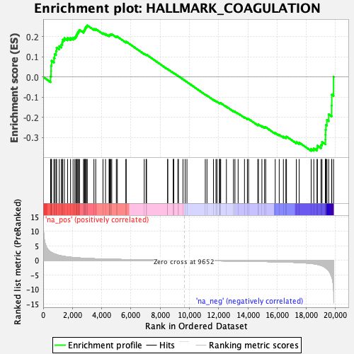

| | | Dataset | Test%20LTED%20wt |
| Phenotype | NoPhenotypeAvailable |
| Upregulated in class | na_neg |
| GeneSet | HALLMARK_COAGULATION |
| Enrichment Score (ES) | -0.36730957 |
| Normalized Enrichment Score (NES) | -1.1631824 |
| Nominal p-value | 0.18401937 |
| FDR q-value | 0.31605598 |
| FWER p-Value | 0.985 |
Table: GSEA Results Summary

Fig 1: Enrichment plot: HALLMARK_COAGULATION
Profile of the Running ES Score & Positions of GeneSet Members on the Rank Ordered List
| SYMBOL | RANK IN GENE LIST | RANK METRIC SCORE | RUNNING ES | CORE ENRICHMENT | | 1 | CAPN5 | 505 | 2.932 | 0.0027 | No |
| 2 | THBS1 | 535 | 2.857 | 0.0287 | No |
| 3 | KLKB1 | 539 | 2.833 | 0.0558 | No |
| 4 | HPN | 572 | 2.713 | 0.0803 | No |
| 5 | CLU | 734 | 2.338 | 0.0947 | No |
| 6 | RAPGEF3 | 784 | 2.212 | 0.1135 | No |
| 7 | FYN | 880 | 2.070 | 0.1287 | No |
| 8 | P2RY1 | 919 | 1.997 | 0.1460 | No |
| 9 | HTRA1 | 1100 | 1.721 | 0.1534 | No |
| 10 | MMP9 | 1244 | 1.569 | 0.1613 | No |
| 11 | FN1 | 1308 | 1.506 | 0.1726 | No |
| 12 | CSRP1 | 1337 | 1.480 | 0.1854 | No |
| 13 | F8 | 1451 | 1.380 | 0.1930 | No |
| 14 | GNG12 | 1669 | 1.218 | 0.1938 | No |
| 15 | MASP2 | 1871 | 1.104 | 0.1942 | No |
| 16 | MMP15 | 2046 | 1.010 | 0.1952 | No |
| 17 | CASP9 | 2168 | 0.959 | 0.1983 | No |
| 18 | MMP10 | 2237 | 0.932 | 0.2038 | No |
| 19 | PROS1 | 2292 | 0.914 | 0.2099 | No |
| 20 | ANG | 2324 | 0.901 | 0.2170 | No |
| 21 | SERPINA1 | 2380 | 0.880 | 0.2227 | No |
| 22 | SERPINC1 | 2428 | 0.865 | 0.2286 | No |
| 23 | TFPI2 | 2485 | 0.846 | 0.2340 | No |
| 24 | WDR1 | 2760 | 0.757 | 0.2274 | No |
| 25 | MMP14 | 2809 | 0.744 | 0.2321 | No |
| 26 | CTSK | 2843 | 0.733 | 0.2375 | No |
| 27 | KLF7 | 2880 | 0.726 | 0.2427 | No |
| 28 | CRIP2 | 2905 | 0.717 | 0.2484 | No |
| 29 | FURIN | 2968 | 0.702 | 0.2520 | No |
| 30 | MAFF | 3014 | 0.689 | 0.2564 | No |
| 31 | PROZ | 3471 | 0.590 | 0.2390 | No |
| 32 | GP1BA | 3595 | 0.570 | 0.2383 | No |
| 33 | TF | 4091 | 0.486 | 0.2179 | No |
| 34 | USP11 | 4264 | 0.462 | 0.2137 | No |
| 35 | TIMP3 | 4508 | 0.430 | 0.2055 | No |
| 36 | ADAM9 | 4529 | 0.427 | 0.2086 | No |
| 37 | PDGFB | 4574 | 0.421 | 0.2104 | No |
| 38 | SIRT2 | 4633 | 0.413 | 0.2115 | No |
| 39 | CFB | 4691 | 0.406 | 0.2125 | No |
| 40 | S100A13 | 5003 | 0.370 | 0.2004 | No |
| 41 | C2 | 5073 | 0.363 | 0.2004 | No |
| 42 | MMP11 | 5655 | 0.301 | 0.1739 | No |
| 43 | HMGCS2 | 5680 | 0.299 | 0.1756 | No |
| 44 | DUSP6 | 6913 | 0.191 | 0.1151 | No |
| 45 | BMP1 | 7043 | 0.181 | 0.1104 | No |
| 46 | ARF4 | 7072 | 0.179 | 0.1107 | No |
| 47 | FBN1 | 8513 | 0.074 | 0.0386 | No |
| 48 | C8G | 8521 | 0.073 | 0.0389 | No |
| 49 | S100A1 | 8903 | 0.050 | 0.0202 | No |
| 50 | GSN | 8914 | 0.049 | 0.0201 | No |
| 51 | PEF1 | 8930 | 0.048 | 0.0198 | No |
| 52 | DCT | 9215 | 0.029 | 0.0057 | No |
| 53 | MST1 | 9252 | 0.027 | 0.0042 | No |
| 54 | MMP1 | 9565 | 0.005 | -0.0115 | No |
| 55 | FGG | 9710 | -0.004 | -0.0188 | No |
| 56 | THBD | 9835 | -0.012 | -0.0249 | No |
| 57 | CD9 | 11090 | -0.091 | -0.0874 | No |
| 58 | PECAM1 | 11206 | -0.099 | -0.0923 | No |
| 59 | CAPN2 | 11648 | -0.126 | -0.1134 | No |
| 60 | CTSO | 11819 | -0.138 | -0.1206 | No |
| 61 | RAC1 | 11891 | -0.144 | -0.1228 | No |
| 62 | LRP1 | 12061 | -0.155 | -0.1299 | No |
| 63 | C3 | 12073 | -0.155 | -0.1290 | No |
| 64 | ANXA1 | 12101 | -0.159 | -0.1288 | No |
| 65 | C1S | 12144 | -0.161 | -0.1294 | No |
| 66 | PROC | 12535 | -0.186 | -0.1473 | No |
| 67 | LGMN | 13018 | -0.219 | -0.1695 | No |
| 68 | PREP | 13119 | -0.227 | -0.1724 | No |
| 69 | DUSP14 | 13336 | -0.243 | -0.1810 | No |
| 70 | F12 | 13771 | -0.276 | -0.2003 | No |
| 71 | F10 | 13969 | -0.291 | -0.2074 | No |
| 72 | LTA4H | 14051 | -0.297 | -0.2087 | No |
| 73 | RABIF | 14683 | -0.348 | -0.2372 | No |
| 74 | LAMP2 | 14725 | -0.352 | -0.2359 | No |
| 75 | F3 | 14963 | -0.373 | -0.2443 | No |
| 76 | CPQ | 15144 | -0.392 | -0.2496 | No |
| 77 | ISCU | 15224 | -0.400 | -0.2498 | No |
| 78 | VWF | 15875 | -0.466 | -0.2781 | No |
| 79 | CFD | 16148 | -0.499 | -0.2871 | No |
| 80 | GNB2 | 16433 | -0.540 | -0.2962 | No |
| 81 | TMPRSS6 | 16603 | -0.562 | -0.2993 | No |
| 82 | PLAU | 16644 | -0.568 | -0.2959 | No |
| 83 | MSRB2 | 17318 | -0.693 | -0.3232 | No |
| 84 | CTSV | 17515 | -0.741 | -0.3260 | No |
| 85 | ACOX2 | 18333 | -1.039 | -0.3573 | Yes |
| 86 | APOC1 | 18514 | -1.162 | -0.3552 | Yes |
| 87 | CTSH | 18735 | -1.349 | -0.3534 | Yes |
| 88 | SH2B2 | 18758 | -1.378 | -0.3412 | Yes |
| 89 | PRSS23 | 19006 | -1.719 | -0.3371 | Yes |
| 90 | CTSB | 19075 | -1.847 | -0.3228 | Yes |
| 91 | DPP4 | 19310 | -2.509 | -0.3105 | Yes |
| 92 | SERPING1 | 19314 | -2.512 | -0.2865 | Yes |
| 93 | ITGA2 | 19319 | -2.524 | -0.2624 | Yes |
| 94 | TIMP1 | 19343 | -2.623 | -0.2383 | Yes |
| 95 | A2M | 19412 | -2.946 | -0.2133 | Yes |
| 96 | C1R | 19532 | -3.508 | -0.1856 | Yes |
| 97 | PLAT | 19731 | -5.553 | -0.1421 | Yes |
| 98 | SERPINE1 | 19743 | -5.704 | -0.0878 | Yes |
| 99 | APOA1 | 19866 | -9.844 | 0.0008 | Yes |
Table: GSEA details [plain text format]
Fig 2: HALLMARK_COAGULATION: Random ES distribution
Gene set null distribution of ES for HALLMARK_COAGULATION